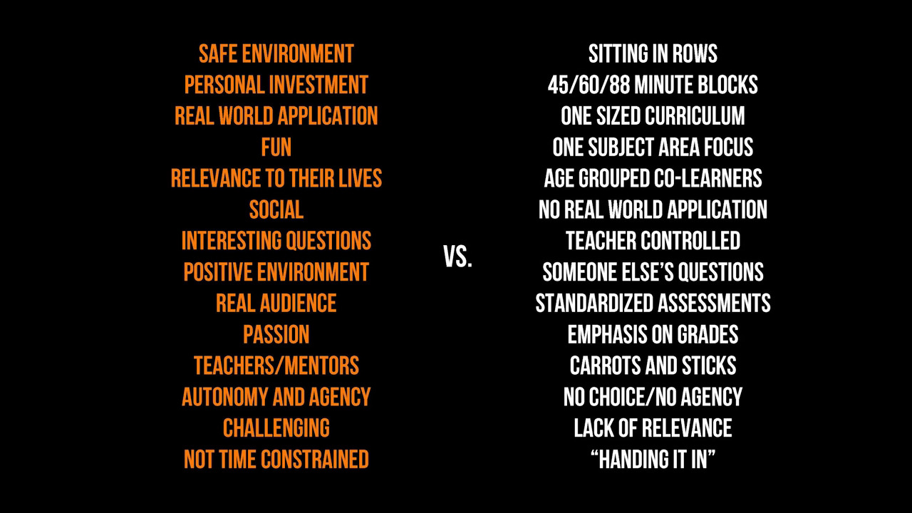
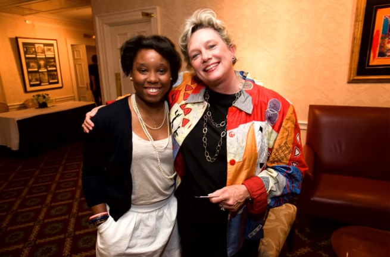
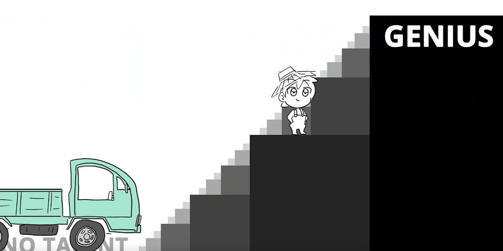

The Principal
Tuesday • March 10th 2020 • 10:29:50 pm
Why most students are getting the least out of school by Dan Cardinali
Poverty Of Mind Comes From Lack Of Non Cognitive Skills
Dan Cardinali's definition of Non Cognitive Skills includes the following:
Building grit, and resilience, and persistence, and self-regulation. He's
describing skills of a Warrior, a Fighter, an Authentic Grown Up.
Dan Cardinali explains that ideally families should provide Non Cognitive
Skills (Child Development), and then schools will deliver Academic
Development (Math, History, Physics).
But this is not how it works today, well to do parents are too busy,
parents stricken by poverty can't have time, and non-cognitive skill
development is not only unavailable, but is often laughed at by teachers
"Parents do your job." they brainlessly utter.
Above all, a child born to the culture of poverty (lacking non-cognitive
skills) will often remain in the culture of poverty be it dropping out or
graduation. The steps out and up are just too far apart.

How dare you.
How. Dare. You.
Image from [The Surprising Truth About Learning in Schools by Will
Richardson](https://www.youtube.com/watch?v=sxyKNMrhEvY)
The Battle Against Poverty of Mind
It is correct to say that Poverty of Mind is rooted in lack of Non
Cognitive Skills.
An example of poverty of mind is inability to have an expensive lunch with
an internship company CEO. Out of fear of not knowing EVERYTHING! from
how to get a table to when to order, or even if it is OK to just have the
cute little bagel and focus on the questionnaire. Lunch, if not impossible,
can be impossibly terrifying.
There is no breaking out of poverty when every-step induces fear,
confusion, anxiety.
To be clear, the ultimate aim for both Student and Principal. Almost
always, is to rise and break away, become a CEO.
Become an inspiration and a teacher; to make life more. To then retire come
the Golden Age of Wisdom and write. Write about the lessons that counted to
make them last even longer. Create an Audio Book in your own voice in hopes
of it being used 50 years from now to Rise & Learn to Really Learn. What an
Honor to have your spirit revived by means of Admiration and Love, your own
voice across decades, maybe centuries, maybe forever.
Instead, the children are getting scared, mostly because they can see
schools are forcing irrelevant learning that fades away. It is impossible
to retain irrelevant knowledge. In context of education, forcing irrelevant
knowledge and grading a student down for lack of retention is evil.
And here the child does not want the job because it has too many
complications, can't even have the internship lunch because it is too
terrifying, and can't conceive of the notion of connecting with the CEO in
such a way as to eventually resign position and start a company in a
similar sector.
They are scared, sometimes crushed, but far too brave to show you...
Principal.
We know what happens to most young people that can't handle fear or
depression.
The Power of a Teacher by Adam Saenz
A Place of Healing
Be it by intent or ignorance, anybody taking part in the fracturing of
minds, and young minds especially, is just another monster.
A school must become a place of healing before it can hope to teach.
It must protect against all kinds of poverty, and bad parents, dangerous
culture and bad ideas.
Today school is a bad place. Just another broken promise.
Elon Musk knocks the college experience

Quote by Elon Musk
[My] recruiting does not have anything that says "Requires University"
because that's absurd, but there is a requirement of evidence of
exceptional ability. [...] I don't consider going to college evidence of
exceptional ability in fact ideally you dropped out and did something
[exceptional].-- Elon Musk - https://en.wikipedia.org/wiki/Elon\_Musk
The Battle Against Poverty of Mind
What can be easier than to help a child grow?
what can be more rewarding than to be Admired, Loved, Remembered? To have a
High School named after you upon your retirement, and have every student
that goes there at least look at your picture with your beloved students
hugging you as if you were their own Mother.

A Meaningful Life Calls For Real Education
Focus on Real Education, not Administration. If you need money, then look
to your students.
Become a Start-up Accelerator. Give them initial mentoring and funding,
Take a small percentage of their earnings in return for the initial funding
and in order to fund other start-ups. Take only for a small number of
years, and only what you need. Get out of their way.
Never forget, Principal. You serve The Kids, The Students, they are the
point of it all, they are the future. The Children are not your means to
staying in business and getting paid- that would make you a Monster and a
Fraud.
The best way to fight poverty in a person's mind, is to set a student up
for a job so high up, that it will make them want to run out of the school
quietly-yelling and hope they never need to come back.
A prestigious position at a local Hospital as a Research Nurse that keeps
everyone informed a month ahead of time, a complicated job at the Library
of Congress, or as Someone Amazing at the Detroit Institute of Arts.
Set a step so high, that it is already a healthy career but completely
unreachable to the child, the step up being, Just Impossible. And then
slowly, build. But smaller steps, and maybe even smaller, or maybe even an
on-ramp for a smooth ride.

Image from Can anyone become a genius? by Mark Diaz
Every Developmental Opportunity
It is not just "grit, and resilience, and persistence, and
self-regulation", Dan Cardinali shows that Talitha Halley had enormous
amount of help beyond Belief and Love which is already wonderful. Donna
Watkins (Talitha's community-school site coordinator) looked for every
developmental opportunity.
Talitha must have said she was scared to go to the Fancy Lunch and Donna
came to her rescue, that is so brave and so sweet.
CIS Alum Talitha Halley appears on MSNBC 5/5/15
Non Cognitive Skills Must Come First
Academic Development can't succeed on its own, it is incompatible with who
we are, we are not machines that can make room for knowledge on our
long-term storage drive. Even with a blooming ecosystem of Memory Palaces,
that which is irrelevant to out Hearts and Existence will be soon forgotten.
This parade through classes, levels, and subjects is a waste of time. Our
time is precious, life is so dear. There simply is no time for charades.
Principal, stand up, and deliver.